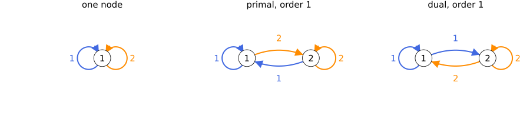

Choosing a graph
The graph gives the structure of the program that certify solves: one node function per node, and one edge inequality per edge. Along a trajectory, a path of the graph that reads its modes says which node function applies at each step. With the template, the graph decides how good the certificate can be and how much it costs (see How a certificate works). This page presents the classical graphs, the property every graph must have, and how to build your own.
The code on this page uses the running example of Systems and problems: system, and problem = PCC.StabilityProblem(system), solved with Clarabel.
Classical graphs
The one-node graph
common_graph(system) has one node and a loop per mode. Its certificate is a single function that satisfies the edge inequality for every mode; for stability, a common Lyapunov function. Start here.
De Bruijn graphs
de_bruijn(k, M) has one node per sequence of $k$ modes, so $M^k$ nodes for $M$ modes, in two versions:
- primal, a memory of the past: in
de_bruijn(k, M), a node stands for the last $k$ modes read, so the edge reading mode $i$ enters a node whose latest mode is $i$; - dual, a prediction of the future:
dual(de_bruijn(k, M))reverses every edge, so a node stands for the next $k$ modes, and the edge reading mode $i$ leaves a node whose next mode is $i$.
With two modes, the one-node graph and the two graphs of order 1:

At order 1, a node is one mode: the edge reading mode $i$ enters node $i$ in the primal graph, and leaves it in the dual graph.
The De Bruijn hierarchy
The one-node graph is the De Bruijn graph of order 0. Each order simulates the next, so each order gives a certificate at least as good as the one before, for every template (see Comparing graphs). The price is the size: order $k$ has $M^k$ nodes and $M^{k+1}$ edges, so each order multiplies the variables and the constraints of the program by $M$. The bounds for the first orders:
template = PCC.QuadraticTemplate()
rate(graph) = PCC.certify(template, graph, problem; optimizer = Clarabel.Optimizer).rate
for k in 0:4
primal = PCC.de_bruijn(k, 2)
println("order ", k, ": ", PCC.n_nodes(primal), " nodes, rates ",
round.((rate(primal), rate(PCC.dual(primal))); digits = 4))
endorder 0: 1 nodes, rates (0.9587, 0.9587)
order 1: 2 nodes, rates (0.8718, 0.8718)
order 2: 4 nodes, rates (0.8688, 0.8688)
order 3: 8 nodes, rates (0.8688, 0.8688)
order 4: 16 nodes, rates (0.8688, 0.8688)On this system, the primal and dual hierarchies give the same bounds. Beyond order 2, the bound stops improving while the graphs keep growing: orders 3 and 4 each double the nodes for the same bound. The hierarchy adds nodes everywhere at once, whether they help or not; the end of this page shows a smaller graph that reaches the same bound.
Path-complete, complete and co-complete graphs
A graph is path-complete when every sequence of modes is read along some path of it ((Ahmadi et al., 2014), Def. 2.2). is_path_complete decides it by the subset construction: start from the set of all nodes, let each mode map a set of nodes to the nodes its edges reach, and the graph is path-complete exactly when the empty set is never reached ((Abate et al., 2026), Prop. 3.1). Two stronger properties are cheap to check, and is_path_complete tries them first:
- complete: every node has an outgoing edge for every mode,
is_complete; - co-complete: every node has an incoming edge for every mode,
is_co_complete.
Primal De Bruijn graphs are complete, and dual ones co-complete. On these two kinds of graphs, the common function of the certificate is the minimum or the maximum of the node functions (see How a certificate works).
Stability and safety need a path-complete graph, and optimal control a complete one: certify checks before solving, and throws if not. A certificate on a graph that is not path-complete would prove the property only for the sequences the graph reads.
Deciding path-completeness is PSPACE-complete in general, as recalled in (Abate et al., 2026): the subset construction can visit exponentially many sets, so on a large graph that is neither complete nor co-complete, the check before solving can take long. check_path_complete = false skips it, for a graph you know to be path-complete.
Your own graph
empty_graph(n) creates a graph with n nodes, and add_edge!(graph, a, b, i) adds an edge from node a to node b reading mode i. For instance, the primal De Bruijn graph of order 1, by hand:
graph = PCC.empty_graph(2)
PCC.add_edge!(graph, 1, 1, 1)
PCC.add_edge!(graph, 1, 2, 2)
PCC.add_edge!(graph, 2, 1, 1)
PCC.add_edge!(graph, 2, 2, 2)
PCC.is_path_complete(graph, 1:PCC.n_modes(system))trueWithout the loop reading mode 2 at node 2, no path reads the sequence $2, 2$, and the graph is no longer path-complete:
partial = PCC.empty_graph(2)
PCC.add_edge!(partial, 1, 1, 1)
PCC.add_edge!(partial, 1, 2, 2)
PCC.add_edge!(partial, 2, 1, 1)
PCC.is_path_complete(partial, 1:PCC.n_modes(system))falseWords on the edges
In a WordGraph, an edge can read a sequence of modes, and imposes one inequality on the product of their matrices. Words are supported for stability only. expanded_form gives a graph that reads the same sequences with one mode per edge, and the graph is path-complete exactly when its expanded form is ((Ahmadi et al., 2014), Defs. 2.1 and 2.2).
Not sure which graph to use?
Let the package design one. Starting from the one-node graph, refine adds nodes only where the certificate is tight. On this system, it reaches the bound of order 2 with 3 nodes and 6 edges, instead of 4 nodes and 8 edges: see Refining the graph.